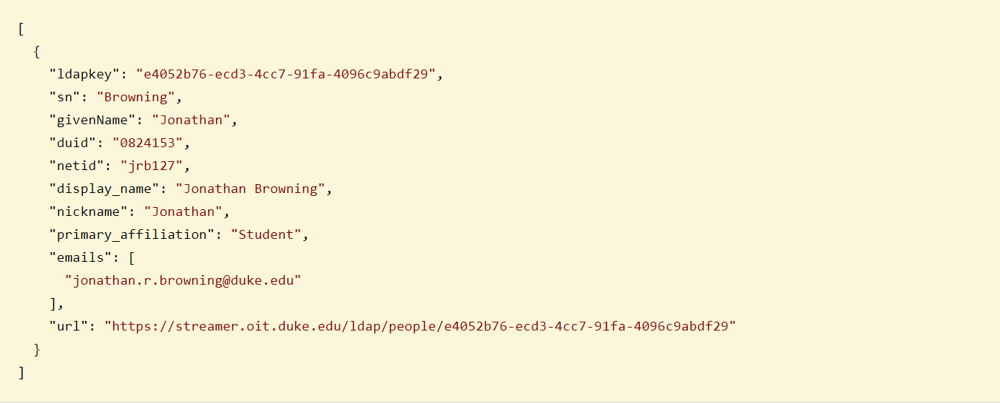
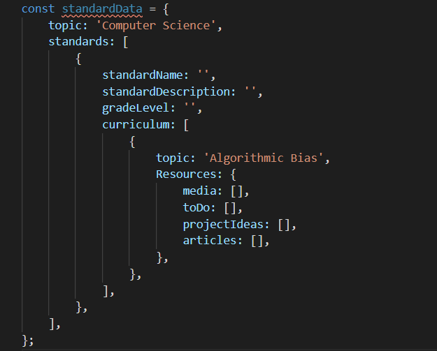

Final Project Plan: Teach Tech NC
Idea
I envision this website as being the built-out prototype of the work I am doing in my I&E 590 class: Special Topics
in Innovation and Entrepreneurship. In this course, we have been focusing on improving high school education, with a
focus on technology education that revolves around the role of technology in society. In talking with a number of
teachers, many common themes came up, but two stood out: teachers believe that teaching about how technology impacts society
is critical, but they don't have the time nor background to figure out how to incoporate these topics into an already
established curriculum and set of standards.
That's where this website will come in. There's already a ton of good content
about these topics that lives out on the web, but there is no centralized location where teachers would be able to access it.
And, even more crucially, there's no other site out there linking that content to the education standards (particularly computer
science ones). This site will provide that linkage. When teachers want to incorporate a tech in society topic, such as
algorithmic bias and the very real effects it can have on people's lives, rather than scouring the web for the content and then
working it into a standard, they could instead come to this site where we would have already provided all that information for them,
so they can spend more time focusing on their individual class.
Scope
Interactive Databse
The "base" of this website would be built around this linking between education standards and existing resources. Currently, I am
referring to this linkage as an interactive database. So, for example, if a teacher had a specific standard that they wanted to teach,
they could come to this website, look up that standard, and an array (not a necessarily a literal array but as a figure of speech) of
resources related to tech in society concepts would come up. And the same could be done in reverse - if there was a particular tech in society
concept that the teacher wanted to teach, they would be able to look up the concept and be presented with different standards under which
that concept would be able to fit.
Further filtering
However, even with this two-way linkage, teachers may be looking for something more specific. A common
sentiment that came up among teachers I interviewed was that students respond best to projects and actionable work - readings and videos and
other lecture material can only go so far. So, teachers would be able to further filter results (either way in the two-way linkage) to just
include activities that are relevant to their search.
Social area for teachers
Additionally, I am aware that, as someone who is not a high school teacher, nor an
expert in content creation, that continued feedback is important. That's why, surrounding this database of sorts, there would be a social
aspect, that would allow teachers to share their thoughts and experience with the content, giving future teachers a better idea of how
to possibly incorporate this content.
College student partners
And finally, the last main feature that I have in mind, is providing a spot for college students on
the website. There are many college students interested and involved with some of these topics, and they could serve as curriculum partners
with the teachers. So if the teachers have questions about the content or desire additional detail, they would have a designated pool of
students they would be able to reach out to.
Data Sources
All data that is not currently in JSON format will either be converted to a CSV or a JSON data object prior to use.
- List of content and curriculum resources, currently being kept internal in the other course but would include things like:
- YouTube videos
- Web games
- Articles, both talking generally about a subject and specific examples
- Other forms of media including, but not limited to movie clips, book excerpts, TedTalks, TikToks, etc
- Activities and actionable things that can make an impact (e.g. the importance of using a password manager)
- Project ideas
- North Carolina computer science education standards (to begin - strong opportunity to connect
these topics to standards in topics in social studies, English, science, and math)
-
Duke Directory API - will be used for population information of the student curriculum partners

Data Structure
I envision that the data structure would look a little something like this:

However, ideally it would be built in a more robust environment than just a javascript file, in something such as
Google FireStore.
Wireframe
Click here for link to my Wix wireframe
Schedule
Progress Check 1
-
Build out framework of website:
- Homepage
- Interactive database page
- Contact page
- Navigation bar
- Signup page with options
- Login page with different options: teacher, student, continue as guest
- Experiment with Firestore database and put in some preliminary example data
- Test storing user input in Firestore database
Progress Check 2
-
Create components for different parts that will come up from a database search
- Resources component
- Curriculum component
- Standard component
-
Set up pages so that all data (such as list of different resources and education standards) are displayed,
but there's no linkage yet.
Progress Check 3
-
Implement reactivity, i.e. you are able to search the data
-
Implement different user types and associated permissions
-
Add in student curriculum partner information
Final Demo
- Cleanup UI/UX
- Add synethic data if haven't produced enough in other class
- Check accessibility and other standards